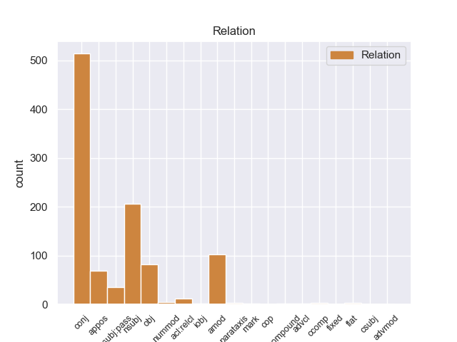
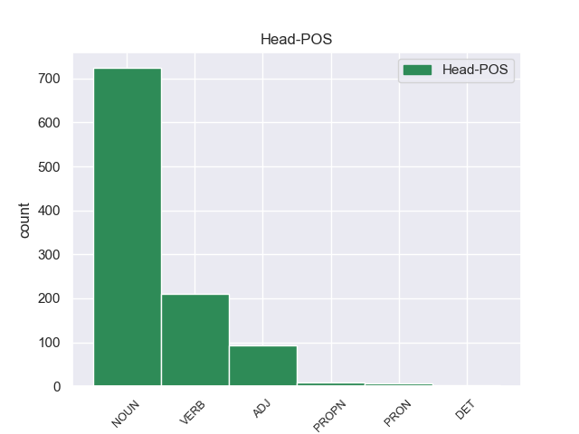
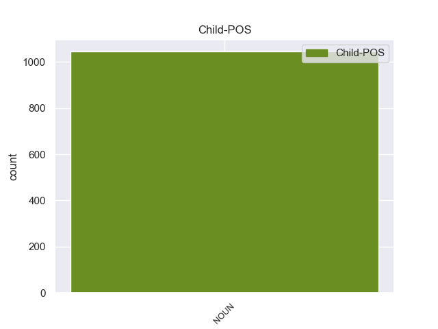

Distribution of features within this leaf



Agreement Rules sorted by frequency.
- When the dependent token is the conjunct(conj) of the head token, and the dependent token is NOUN.
1 από _ _ _ _ 0 _ _ _
2 τα _ _ _ _ 0 _ _ _
3 δε _ _ _ _ 0 _ _ _
4 έγγραφα _ _ _ _ 0 _ _ _
5 της _ _ _ _ 0 _ _ _
6 υπόθεσης _ _ _ _ 0 _ _ _
7 προκύπτει _ _ _ _ 0 _ _ _
8 ότι _ _ _ _ 0 _ _ _
9 δεν _ _ _ _ 0 _ _ _
10 φαίνεται _ _ _ _ 0 _ _ _
11 να _ _ _ _ 0 _ _ _
12 έχει _ _ _ _ 0 _ _ _
13 ληφθεί _ _ _ _ 0 _ _ _
14 υπόψη _ _ _ _ 0 _ _ _
15 η _ _ _ _ 0 _ _ _
16 σύσταση _ _ _ _ 0 _ _ _
17 να _ _ _ _ 0 _ _ _
18 διαβιβαστεί _ _ _ _ 0 _ _ _
19 η _ _ _ _ 0 _ _ _
20 αίτηση _ _ _ _ 0 _ _ _
21 άρσης _ _ _ _ 0 _ _ _
22 της _ _ _ _ 0 _ _ _
23 ασυλίας _ _ _ _ 0 _ _ _
24 μόνον _ _ _ _ 0 _ _ _
25 επί _ _ _ _ 0 _ _ _
26 τη _ _ _ _ 0 _ _ _
27 βάσει _ _ _ _ 0 _ _ _
28 ακριβέστερου _ _ _ _ 0 _ _ _
29 προσδιορισμού _ _ _ _ 0 _ _ _
30 όσον _ _ _ _ 0 _ _ _
31 αφορά _ _ _ _ 0 _ _ _
32 τους _ _ _ _ 0 _ _ _
33 τόπους τόπου NOUN _ Gender=Masc|Number=Plur 0 _ _ _
34 και _ _ _ _ 0 _ _ _
35 τα _ _ _ _ 0 _ _ _
36 πρόσωπα πρόσωπ NOUN _ Gender=Masc|Number=Plur 33 conj _ _
37 που _ _ _ _ 0 _ _ _
38 εμπλέκονται _ _ _ _ 0 _ _ _
39 σ _ _ _ _ 0 _ _ _
40 την _ _ _ _ 0 _ _ _
41 υπόθεση _ _ _ _ 0 _ _ _
42 . _ _ _ _ 0 _ _ _
1 Τα _ _ _ _ 0 _ _ _
2 εγκλήματα εγκλήón NOUN _ Gender=Fem|Number=Plur 4 nsubj _ _
3 είναι _ _ _ _ 0 _ _ _
4 σοβαρά σοβαo ADJ _ Gender=Fem|Number=Plur 0 _ _ _
5 και _ _ _ _ 0 _ _ _
6 ανήκουν _ _ _ _ 0 _ _ _
7 σε _ _ _ _ 0 _ _ _
8 μια _ _ _ _ 0 _ _ _
9 κατηγορία _ _ _ _ 0 _ _ _
10 για _ _ _ _ 0 _ _ _
11 την _ _ _ _ 0 _ _ _
12 οποία _ _ _ _ 0 _ _ _
13 κανονικά _ _ _ _ 0 _ _ _
14 δεν _ _ _ _ 0 _ _ _
15 προσφέρεται _ _ _ _ 0 _ _ _
16 βουλευτική _ _ _ _ 0 _ _ _
17 ασυλία _ _ _ _ 0 _ _ _
18 , _ _ _ _ 0 _ _ _
19 επειδή _ _ _ _ 0 _ _ _
20 δεν _ _ _ _ 0 _ _ _
21 αφορούν _ _ _ _ 0 _ _ _
22 τις _ _ _ _ 0 _ _ _
23 συνήθεις _ _ _ _ 0 _ _ _
24 και _ _ _ _ 0 _ _ _
25 προσήκουσες _ _ _ _ 0 _ _ _
26 δραστηριότητες _ _ _ _ 0 _ _ _
27 βουλευτή _ _ _ _ 0 _ _ _
28 του _ _ _ _ 0 _ _ _
29 Σώματος _ _ _ _ 0 _ _ _
30 , _ _ _ _ 0 _ _ _
31 ή _ _ _ _ 0 _ _ _
32 πολιτικού _ _ _ _ 0 _ _ _
33 που _ _ _ _ 0 _ _ _
34 δραστηριοποιείται _ _ _ _ 0 _ _ _
35 σε _ _ _ _ 0 _ _ _
36 μια _ _ _ _ 0 _ _ _
37 δημοκρατική _ _ _ _ 0 _ _ _
38 κοινωνία _ _ _ _ 0 _ _ _
39 . _ _ _ _ 0 _ _ _
1 Θα _ _ _ _ 0 _ _ _
2 ήθελα _ _ _ _ 0 _ _ _
3 να _ _ _ _ 0 _ _ _
4 επιστήσω _ _ _ _ 0 _ _ _
5 την _ _ _ _ 0 _ _ _
6 προσοχή _ _ _ _ 0 _ _ _
7 όλων _ _ _ _ 0 _ _ _
8 των _ _ _ _ 0 _ _ _
9 συναδέλφων _ _ _ _ 0 _ _ _
10 σ _ _ _ _ 0 _ _ _
11 το _ _ _ _ 0 _ _ _
12 γεγονός _ _ _ _ 0 _ _ _
13 ότι _ _ _ _ 0 _ _ _
14 , _ _ _ _ 0 _ _ _
15 εάν _ _ _ _ 0 _ _ _
16 υπάρχουν _ _ _ _ 0 _ _ _
17 κάποιες _ _ _ _ 0 _ _ _
18 ελευθερίες _ _ _ _ 0 _ _ _
19 οι _ _ _ _ 0 _ _ _
20 οποίες _ _ _ _ 0 _ _ _
21 είναι _ _ _ _ 0 _ _ _
22 ζωτικής _ _ _ _ 0 _ _ _
23 σημασίας _ _ _ _ 0 _ _ _
24 για _ _ _ _ 0 _ _ _
25 την _ _ _ _ 0 _ _ _
26 άσκηση _ _ _ _ 0 _ _ _
27 του _ _ _ _ 0 _ _ _
28 λειτουργήματος _ _ _ _ 0 _ _ _
29 της _ _ _ _ 0 _ _ _
30 δημόσιας δημόσιαo NOUN _ Gender=Fem|Number=Sing 31 amod _ _
31 εκπροσώπησης εκπροσώπησης NOUN _ Gender=Fem|Number=Sing 0 _ _ _
32 , _ _ _ _ 0 _ _ _
33 ιδίως _ _ _ _ 0 _ _ _
34 για _ _ _ _ 0 _ _ _
35 ένα _ _ _ _ 0 _ _ _
36 Κοινοβούλιο _ _ _ _ 0 _ _ _
37 σαν _ _ _ _ 0 _ _ _
38 το _ _ _ _ 0 _ _ _
39 δικό _ _ _ _ 0 _ _ _
40 μας _ _ _ _ 0 _ _ _
41 , _ _ _ _ 0 _ _ _
42 η _ _ _ _ 0 _ _ _
43 ελευθερία _ _ _ _ 0 _ _ _
44 της _ _ _ _ 0 _ _ _
45 επικοινωνίας _ _ _ _ 0 _ _ _
46 με _ _ _ _ 0 _ _ _
47 άλλους _ _ _ _ 0 _ _ _
48 πολίτες _ _ _ _ 0 _ _ _
49 και _ _ _ _ 0 _ _ _
50 με _ _ _ _ 0 _ _ _
51 τους _ _ _ _ 0 _ _ _
52 πολίτες _ _ _ _ 0 _ _ _
53 τρίτων _ _ _ _ 0 _ _ _
54 χωρών _ _ _ _ 0 _ _ _
55 , _ _ _ _ 0 _ _ _
56 καθώς _ _ _ _ 0 _ _ _
57 και _ _ _ _ 0 _ _ _
58 η _ _ _ _ 0 _ _ _
59 ελευθερία _ _ _ _ 0 _ _ _
60 μετακίνησης _ _ _ _ 0 _ _ _
61 , _ _ _ _ 0 _ _ _
62 είναι _ _ _ _ 0 _ _ _
63 κρίσιμες _ _ _ _ 0 _ _ _
64 για _ _ _ _ 0 _ _ _
65 τη _ _ _ _ 0 _ _ _
66 διεκπεραίωση _ _ _ _ 0 _ _ _
67 του _ _ _ _ 0 _ _ _
68 έργου _ _ _ _ 0 _ _ _
69 μας _ _ _ _ 0 _ _ _
70 . _ _ _ _ 0 _ _ _
1 Πρέπει _ _ _ _ 0 _ _ _
2 να _ _ _ _ 0 _ _ _
3 επισημανθεί _ _ _ _ 0 _ _ _
4 ότι _ _ _ _ 0 _ _ _
5 ο _ _ _ _ 0 _ _ _
6 Εισαγγελέας _ _ _ _ 0 _ _ _
7 Πλημμελειοδικών _ _ _ _ 0 _ _ _
8 υποστήριξε _ _ _ _ 0 _ _ _
9 σθεναρά _ _ _ _ 0 _ _ _
10 την _ _ _ _ 0 _ _ _
11 αίτηση αίτηση NOUN _ Gender=Fem|Number=Sing 0 _ _ _
12 επιβολής _ _ _ _ 0 _ _ _
13 μέτρων μέτρω NOUN _ Gender=Fem|Number=Plur 11 appos _ _
14 δικαστικής _ _ _ _ 0 _ _ _
15 επιτήρησης _ _ _ _ 0 _ _ _
16 που _ _ _ _ 0 _ _ _
17 υπέβαλαν _ _ _ _ 0 _ _ _
18 οι _ _ _ _ 0 _ _ _
19 ανακριτές _ _ _ _ 0 _ _ _
20 , _ _ _ _ 0 _ _ _
21 υπογραμμίζοντας _ _ _ _ 0 _ _ _
22 τη _ _ _ _ 0 _ _ _
23 σοβαρότητα _ _ _ _ 0 _ _ _
24 και _ _ _ _ 0 _ _ _
25 τη _ _ _ _ 0 _ _ _
26 φύση _ _ _ _ 0 _ _ _
27 της _ _ _ _ 0 _ _ _
28 υπόθεσης _ _ _ _ 0 _ _ _
29 και _ _ _ _ 0 _ _ _
30 χαρακτηρίζοντας _ _ _ _ 0 _ _ _
31 μάλιστα _ _ _ _ 0 _ _ _
32 την _ _ _ _ 0 _ _ _
33 αίτηση _ _ _ _ 0 _ _ _
34 αυτή _ _ _ _ 0 _ _ _
35 ως _ _ _ _ 0 _ _ _
36 απαραίτητη _ _ _ _ 0 _ _ _
37 επί _ _ _ _ 0 _ _ _
38 της _ _ _ _ 0 _ _ _
39 αρχής _ _ _ _ 0 _ _ _
40 . _ _ _ _ 0 _ _ _
1 Ο _ _ _ _ 0 _ _ _
2 αλ αλ NOUN _ Gender=Masc|Number=Sing 5 nsubj:pass _ _
3 Σενούσι _ _ _ _ 0 _ _ _
4 έχει _ _ _ _ 0 _ _ _
5 καταδικαστεί καταδικαστr VERB _ Gender=Masc|Number=Sing|Tense=Past|VerbForm=Part 0 _ _ _
6 σε _ _ _ _ 0 _ _ _
7 ισόβια _ _ _ _ 0 _ _ _
8 κάθειρξη _ _ _ _ 0 _ _ _
9 λόγω _ _ _ _ 0 _ _ _
10 συμμετοχής _ _ _ _ 0 _ _ _
11 του _ _ _ _ 0 _ _ _
12 , _ _ _ _ 0 _ _ _
13 το _ _ _ _ 0 _ _ _
14 1989 _ _ _ _ 0 _ _ _
15 , _ _ _ _ 0 _ _ _
16 σε _ _ _ _ 0 _ _ _
17 επίθεση _ _ _ _ 0 _ _ _
18 κατά _ _ _ _ 0 _ _ _
19 γαλλικού _ _ _ _ 0 _ _ _
20 αεροσκάφους _ _ _ _ 0 _ _ _
21 , _ _ _ _ 0 _ _ _
22 κατά _ _ _ _ 0 _ _ _
23 την _ _ _ _ 0 _ _ _
24 οποία _ _ _ _ 0 _ _ _
25 σκοτώθηκαν _ _ _ _ 0 _ _ _
26 170 _ _ _ _ 0 _ _ _
27 άνθρωποι _ _ _ _ 0 _ _ _
28 . _ _ _ _ 0 _ _ _
1 Ενώ _ _ _ _ 0 _ _ _
2 τον _ _ _ _ 0 _ _ _
3 Ιανουάριο_του_1897 _ _ _ _ 0 _ _ _
4 γίνονταν _ _ _ _ 0 _ _ _
5 σφαγές _ _ _ _ 0 _ _ _
6 σ _ _ _ _ 0 _ _ _
7 τα _ _ _ _ 0 _ _ _
8 Χανιά _ _ _ _ 0 _ _ _
9 και _ _ _ _ 0 _ _ _
10 σ _ _ _ _ 0 _ _ _
11 το _ _ _ _ 0 _ _ _
12 Ρέθυμνο _ _ _ _ 0 _ _ _
13 , _ _ _ _ 0 _ _ _
14 ο _ _ _ _ 0 _ _ _
15 Βενιζέλος _ _ _ _ 0 _ _ _
16 που _ _ _ _ 0 _ _ _
17 περιόδευε _ _ _ _ 0 _ _ _
18 σ _ _ _ _ 0 _ _ _
19 το _ _ _ _ 0 _ _ _
20 νησί _ _ _ _ 0 _ _ _
21 , _ _ _ _ 0 _ _ _
22 έσπευσε _ _ _ _ 0 _ _ _
23 σ _ _ _ _ 0 _ _ _
24 τη _ _ _ _ 0 _ _ _
25 Μαλάξα _ _ _ _ 0 _ _ _
26 , _ _ _ _ 0 _ _ _
27 κοντά _ _ _ _ 0 _ _ _
28 σ _ _ _ _ 0 _ _ _
29 τα _ _ _ _ 0 _ _ _
30 Χανιά _ _ _ _ 0 _ _ _
31 όπου _ _ _ _ 0 _ _ _
32 είχαν _ _ _ _ 0 _ _ _
33 συγκεντρωθεί συγκεντρωθr VERB _ Gender=Masc|Number=Sing|Tense=Past|VerbForm=Part 0 _ _ _
34 περισσότεροι _ _ _ _ 0 _ _ _
35 από _ _ _ _ 0 _ _ _
36 2.000 _ _ _ _ 0 _ _ _
37 επαναστάτες επαναστάτε NOUN _ Gender=Masc|Number=Plur 33 obj _ _
38 και _ _ _ _ 0 _ _ _
39 τέθηκε _ _ _ _ 0 _ _ _
40 επικεφαλής _ _ _ _ 0 _ _ _
41 τους _ _ _ _ 0 _ _ _
42 . _ _ _ _ 0 _ _ _
1 Είναι _ _ _ _ 0 _ _ _
2 σημαντικό _ _ _ _ 0 _ _ _
3 να _ _ _ _ 0 _ _ _
4 υπογραμμίσω _ _ _ _ 0 _ _ _
5 το _ _ _ _ 0 _ _ _
6 γεγονός _ _ _ _ 0 _ _ _
7 ότι _ _ _ _ 0 _ _ _
8 και _ _ _ _ 0 _ _ _
9 οι _ _ _ _ 0 _ _ _
10 δύο _ _ _ _ 0 _ _ _
11 βουλευτές _ _ _ _ 0 _ _ _
12 διατρανώνουν _ _ _ _ 0 _ _ _
13 σθεναρά _ _ _ _ 0 _ _ _
14 την _ _ _ _ 0 _ _ _
15 αθωότητά _ _ _ _ 0 _ _ _
16 τους _ _ _ _ 0 _ _ _
17 και _ _ _ _ 0 _ _ _
18 καταγγέλλουν _ _ _ _ 0 _ _ _
19 αυτό αυτό PRON _ Gender=Masc|Number=Sing|PronType=Ind 0 _ _ _
20 που _ _ _ _ 0 _ _ _
21 οι _ _ _ _ 0 _ _ _
22 ίδιοι _ _ _ _ 0 _ _ _
23 θεωρούν _ _ _ _ 0 _ _ _
24 καταχρήσεις καταχρήσει NOUN _ Gender=Masc|Number=Plur 19 acl:relcl _ _
25 σ _ _ _ _ 0 _ _ _
26 τη _ _ _ _ 0 _ _ _
27 διαδικασία _ _ _ _ 0 _ _ _
28 δίωξης _ _ _ _ 0 _ _ _
29 . _ _ _ _ 0 _ _ _
1 Σύμφωνα _ _ _ _ 0 _ _ _
2 με _ _ _ _ 0 _ _ _
3 την _ _ _ _ 0 _ _ _
4 έκθεση _ _ _ _ 0 _ _ _
5 , _ _ _ _ 0 _ _ _
6 οι _ _ _ _ 0 _ _ _
7 επιπτώσεις _ _ _ _ 0 _ _ _
8 της _ _ _ _ 0 _ _ _
9 οικονομικής _ _ _ _ 0 _ _ _
10 κρίσης _ _ _ _ 0 _ _ _
11 και _ _ _ _ 0 _ _ _
12 η _ _ _ _ 0 _ _ _
13 έξαρση _ _ _ _ 0 _ _ _
14 του _ _ _ _ 0 _ _ _
15 λαϊκισμού _ _ _ _ 0 _ _ _
16 αποτελούν _ _ _ _ 0 _ _ _
17 τα _ _ _ _ 0 _ _ _
18 κύρια κύρι NOUN _ Gender=Fem|Number=Plur 19 nummod _ _
19 αίτια αίτι NOUN _ Gender=Fem|Number=Plur 0 _ _ _
20 της _ _ _ _ 0 _ _ _
21 φθοράς _ _ _ _ 0 _ _ _
22 που _ _ _ _ 0 _ _ _
23 υπέστη _ _ _ _ 0 _ _ _
24 η _ _ _ _ 0 _ _ _
25 ελευθερία _ _ _ _ 0 _ _ _
26 του _ _ _ _ 0 _ _ _
27 τύπου _ _ _ _ 0 _ _ _
28 σ _ _ _ _ 0 _ _ _
29 την _ _ _ _ 0 _ _ _
30 Ελλάδα _ _ _ _ 0 _ _ _
31 . _ _ _ _ 0 _ _ _
1 Σ _ _ _ _ 0 _ _ _
2 την _ _ _ _ 0 _ _ _
3 παραλία _ _ _ _ 0 _ _ _
4 , _ _ _ _ 0 _ _ _
5 οι _ _ _ _ 0 _ _ _
6 λάτρεις _ _ _ _ 0 _ _ _
7 των _ _ _ _ 0 _ _ _
8 θαλάσσιων _ _ _ _ 0 _ _ _
9 σπορ _ _ _ _ 0 _ _ _
10 μπορούν _ _ _ _ 0 _ _ _
11 να _ _ _ _ 0 _ _ _
12 κάνουν _ _ _ _ 0 _ _ _
13 θαλάσσιο _ _ _ _ 0 _ _ _
14 ski _ _ _ _ 0 _ _ _
15 , _ _ _ _ 0 _ _ _
16 jet jet NOUN _ Gender=Masc|Number=Sing 0 _ _ _
17 ski ski NOUN _ Gender=Masc|Number=Sing 16 flat _ _
18 , _ _ _ _ 0 _ _ _
19 wind _ _ _ _ 0 _ _ _
20 surfing _ _ _ _ 0 _ _ _
21 , _ _ _ _ 0 _ _ _
22 αλεξίπτωτο _ _ _ _ 0 _ _ _
23 , _ _ _ _ 0 _ _ _
24 καταδύσεις _ _ _ _ 0 _ _ _
25 , _ _ _ _ 0 _ _ _
26 καθώς _ _ _ _ 0 _ _ _
27 και _ _ _ _ 0 _ _ _
28 να _ _ _ _ 0 _ _ _
29 ενοικιάσουν _ _ _ _ 0 _ _ _
30 σκάφη _ _ _ _ 0 _ _ _
31 αναψυχής _ _ _ _ 0 _ _ _
32 . _ _ _ _ 0 _ _ _
1 Los _ _ _ _ 0 _ _ _
2 resultados _ _ _ _ 0 _ _ _
3 fantasticos _ _ _ _ 0 _ _ _
4 , _ _ _ _ 0 _ _ _
5 de _ _ _ _ 0 _ _ _
6 verdad _ _ _ _ 0 _ _ _
7 es _ _ _ _ 0 _ _ _
8 que _ _ _ _ 0 _ _ _
9 una _ _ _ _ 0 _ _ _
10 vez vez NOUN _ Gender=Fem|Number=Sing 11 mark _ _
11 montada montado VERB _ Gender=Fem|Number=Sing|Tense=Past|VerbForm=Part 0 _ _ _
12 la _ _ _ _ 0 _ _ _
13 cocina _ _ _ _ 0 _ _ _
14 no _ _ _ _ 0 _ _ _
15 me _ _ _ _ 0 _ _ _
16 puedo _ _ _ _ 0 _ _ _
17 creer _ _ _ _ 0 _ _ _
18 los _ _ _ _ 0 _ _ _
19 resultados _ _ _ _ 0 _ _ _
20 , _ _ _ _ 0 _ _ _
21 tengo _ _ _ _ 0 _ _ _
22 una _ _ _ _ 0 _ _ _
23 cocina _ _ _ _ 0 _ _ _
24 muy _ _ _ _ 0 _ _ _
25 comoda _ _ _ _ 0 _ _ _
26 , _ _ _ _ 0 _ _ _
27 con _ _ _ _ 0 _ _ _
28 unas _ _ _ _ 0 _ _ _
29 cositas _ _ _ _ 0 _ _ _
30 que _ _ _ _ 0 _ _ _
31 tuve _ _ _ _ 0 _ _ _
32 que _ _ _ _ 0 _ _ _
33 modificar _ _ _ _ 0 _ _ _
34 que _ _ _ _ 0 _ _ _
35 todo _ _ _ _ 0 _ _ _
36 eso _ _ _ _ 0 _ _ _
37 se _ _ _ _ 0 _ _ _
38 encargaron _ _ _ _ 0 _ _ _
39 ellos _ _ _ _ 0 _ _ _
40 , _ _ _ _ 0 _ _ _
41 la _ _ _ _ 0 _ _ _
42 verdad _ _ _ _ 0 _ _ _
43 es _ _ _ _ 0 _ _ _
44 que _ _ _ _ 0 _ _ _
45 ha _ _ _ _ 0 _ _ _
46 merecido _ _ _ _ 0 _ _ _
47 la _ _ _ _ 0 _ _ _
48 pena _ _ _ _ 0 _ _ _
49 . _ _ _ _ 0 _ _ _
1 John _ _ _ _ 0 _ _ _
2 Allan _ _ _ _ 0 _ _ _
3 , _ _ _ _ 0 _ _ _
4 el _ _ _ _ 0 _ _ _
5 mencionado mencionado NOUN _ Gender=Masc|Number=Sing|VerbForm=Part 7 cop _ _
6 primer _ _ _ _ 0 _ _ _
7 conductor conductor NOUN _ Gender=Masc|Number=Sing 0 _ _ _
8 de _ _ _ _ 0 _ _ _
9 la _ _ _ _ 0 _ _ _
10 locomotora _ _ _ _ 0 _ _ _
11 La _ _ _ _ 0 _ _ _
12 Porteña _ _ _ _ 0 _ _ _
13 , _ _ _ _ 0 _ _ _
14 condujo _ _ _ _ 0 _ _ _
15 este _ _ _ _ 0 _ _ _
16 lúgubre _ _ _ _ 0 _ _ _
17 tren _ _ _ _ 0 _ _ _
18 y _ _ _ _ 0 _ _ _
19 falleció _ _ _ _ 0 _ _ _
20 víctima _ _ _ _ 0 _ _ _
21 de _ _ _ _ 0 _ _ _
22 la _ _ _ _ 0 _ _ _
23 epidemia _ _ _ _ 0 _ _ _
24 a _ _ _ _ 0 _ _ _
25 los _ _ _ _ 0 _ _ _
26 36 _ _ _ _ 0 _ _ _
27 años _ _ _ _ 0 _ _ _
28 . _ _ _ _ 0 _ _ _
1 Sus _ _ _ _ 0 _ _ _
2 antepasados _ _ _ _ 0 _ _ _
3 esquimo esquimo ADJ _ Gender=Masc|Number=Sing 0 _ _ _
4 - _ _ _ _ 0 _ _ _
5 aleutianos aleutiano NOUN _ Gender=Masc|Number=Plur 3 compound _ _
6 cruzaron _ _ _ _ 0 _ _ _
7 el _ _ _ _ 0 _ _ _
8 estrecho _ _ _ _ 0 _ _ _
9 de _ _ _ _ 0 _ _ _
10 Bering _ _ _ _ 0 _ _ _
11 y _ _ _ _ 0 _ _ _
12 se _ _ _ _ 0 _ _ _
13 asentaron _ _ _ _ 0 _ _ _
14 también _ _ _ _ 0 _ _ _
15 en _ _ _ _ 0 _ _ _
16 Norteamérica _ _ _ _ 0 _ _ _
17 . _ _ _ _ 0 _ _ _
1 La _ _ _ _ 0 _ _ _
2 Bizona _ _ _ _ 0 _ _ _
3 , _ _ _ _ 0 _ _ _
4 o _ _ _ _ 0 _ _ _
5 Bizonia _ _ _ _ 0 _ _ _
6 , _ _ _ _ 0 _ _ _
7 fue _ _ _ _ 0 _ _ _
8 el _ _ _ _ 0 _ _ _
9 nombre _ _ _ _ 0 _ _ _
10 dado dado VERB _ Gender=Masc|Number=Sing|VerbForm=Part 0 _ _ _
11 a _ _ _ _ 0 _ _ _
12 el _ _ _ _ 0 _ _ _
13 territorio territorio NOUN _ Gender=Masc|Number=Sing 10 iobj _ _
14 alemán _ _ _ _ 0 _ _ _
15 formado _ _ _ _ 0 _ _ _
16 por _ _ _ _ 0 _ _ _
17 la _ _ _ _ 0 _ _ _
18 unión _ _ _ _ 0 _ _ _
19 de _ _ _ _ 0 _ _ _
20 las _ _ _ _ 0 _ _ _
21 zonas _ _ _ _ 0 _ _ _
22 estadounidense _ _ _ _ 0 _ _ _
23 y _ _ _ _ 0 _ _ _
24 británica _ _ _ _ 0 _ _ _
25 durante _ _ _ _ 0 _ _ _
26 la _ _ _ _ 0 _ _ _
27 ocupación _ _ _ _ 0 _ _ _
28 aliada _ _ _ _ 0 _ _ _
29 de _ _ _ _ 0 _ _ _
30 Alemania _ _ _ _ 0 _ _ _
31 , _ _ _ _ 0 _ _ _
32 tras _ _ _ _ 0 _ _ _
33 la _ _ _ _ 0 _ _ _
34 finalización _ _ _ _ 0 _ _ _
35 de _ _ _ _ 0 _ _ _
36 la _ _ _ _ 0 _ _ _
37 II _ _ _ _ 0 _ _ _
38 Guerra _ _ _ _ 0 _ _ _
39 Mundial _ _ _ _ 0 _ _ _
40 . _ _ _ _ 0 _ _ _
1 Sin _ _ _ _ 0 _ _ _
2 embargo _ _ _ _ 0 _ _ _
3 , _ _ _ _ 0 _ _ _
4 emitieron _ _ _ _ 0 _ _ _
5 una _ _ _ _ 0 _ _ _
6 declaración _ _ _ _ 0 _ _ _
7 el _ _ _ _ 0 _ _ _
8 6 _ _ _ _ 0 _ _ _
9 de _ _ _ _ 0 _ _ _
10 noviembre _ _ _ _ 0 _ _ _
11 , _ _ _ _ 0 _ _ _
12 una uno DET _ Definite=Ind|Gender=Fem|Number=Sing|PronType=Art 0 _ _ _
13 vez vez NOUN _ Gender=Fem|Number=Sing 12 fixed _ _
14 que _ _ _ _ 0 _ _ _
15 el _ _ _ _ 0 _ _ _
16 embargo _ _ _ _ 0 _ _ _
17 y _ _ _ _ 0 _ _ _
18 el _ _ _ _ 0 _ _ _
19 aumento _ _ _ _ 0 _ _ _
20 de _ _ _ _ 0 _ _ _
21 el _ _ _ _ 0 _ _ _
22 precio _ _ _ _ 0 _ _ _
23 ya _ _ _ _ 0 _ _ _
24 habían _ _ _ _ 0 _ _ _
25 comenzado _ _ _ _ 0 _ _ _
26 ; _ _ _ _ 0 _ _ _
Disagree Examples:
1 Digám _ _ _ _ 0 _ _ _
2 os _ _ _ _ 0 _ _ _
3 lo _ _ _ _ 0 _ _ _
4 claramente _ _ _ _ 0 _ _ _
5 , _ _ _ _ 0 _ _ _
6 la _ _ _ _ 0 _ _ _
7 insurgencia insurgencia NOUN _ Gender=Fem|Number=Sing 10 nsubj _ _
8 se _ _ _ _ 0 _ _ _
9 ha _ _ _ _ 0 _ _ _
10 pronunciado pronunciar VERB _ Gender=Masc|Number=Sing|Tense=Past|VerbForm=Part 0 _ _ _
11 mucho _ _ _ _ 0 _ _ _
12 más _ _ _ _ 0 _ _ _
13 claramente _ _ _ _ 0 _ _ _
14 respecto _ _ _ _ 0 _ _ _
15 a _ _ _ _ 0 _ _ _
16 el _ _ _ _ 0 _ _ _
17 tema _ _ _ _ 0 _ _ _
18 de _ _ _ _ 0 _ _ _
19 la _ _ _ _ 0 _ _ _
20 paz _ _ _ _ 0 _ _ _
21 que _ _ _ _ 0 _ _ _
22 el _ _ _ _ 0 _ _ _
23 Estado _ _ _ _ 0 _ _ _
24 , _ _ _ _ 0 _ _ _
25 como _ _ _ _ 0 _ _ _
26 lo _ _ _ _ 0 _ _ _
27 demuestra _ _ _ _ 0 _ _ _
28 el _ _ _ _ 0 _ _ _
29 fragmento _ _ _ _ 0 _ _ _
30 que _ _ _ _ 0 _ _ _
31 Bermúdez _ _ _ _ 0 _ _ _
32 cita _ _ _ _ 0 _ _ _
33 de _ _ _ _ 0 _ _ _
34 la _ _ _ _ 0 _ _ _
35 respuesta _ _ _ _ 0 _ _ _
36 de _ _ _ _ 0 _ _ _
37 " _ _ _ _ 0 _ _ _
38 Gabino _ _ _ _ 0 _ _ _
39 " _ _ _ _ 0 _ _ _
40 a _ _ _ _ 0 _ _ _
41 Piedad _ _ _ _ 0 _ _ _
42 Córdoba _ _ _ _ 0 _ _ _
43 , _ _ _ _ 0 _ _ _
44 en _ _ _ _ 0 _ _ _
45 la _ _ _ _ 0 _ _ _
46 cual _ _ _ _ 0 _ _ _
47 no _ _ _ _ 0 _ _ _
48 se _ _ _ _ 0 _ _ _
49 plantea _ _ _ _ 0 _ _ _
50 ni _ _ _ _ 0 _ _ _
51 siquiera _ _ _ _ 0 _ _ _
52 " _ _ _ _ 0 _ _ _
53 esperar _ _ _ _ 0 _ _ _
54 un _ _ _ _ 0 _ _ _
55 mejor _ _ _ _ 0 _ _ _
56 gobierno _ _ _ _ 0 _ _ _
57 " _ _ _ _ 0 _ _ _
58 . _ _ _ _ 0 _ _ _
1 Entre _ _ _ _ 0 _ _ _
2 los _ _ _ _ 0 _ _ _
3 cultivos _ _ _ _ 0 _ _ _
4 de _ _ _ _ 0 _ _ _
5 secano _ _ _ _ 0 _ _ _
6 , _ _ _ _ 0 _ _ _
7 destaca _ _ _ _ 0 _ _ _
8 su _ _ _ _ 0 _ _ _
9 producción _ _ _ _ 0 _ _ _
10 de _ _ _ _ 0 _ _ _
11 trigo trigo NOUN _ Gender=Masc|Number=Sing 0 _ _ _
12 , _ _ _ _ 0 _ _ _
13 cebada cebado NOUN _ Gender=Fem|Number=Sing|VerbForm=Part 11 conj _ SpaceAfter=No
14 , _ _ _ _ 0 _ _ _
15 avena _ _ _ _ 0 _ _ _
16 y _ _ _ _ 0 _ _ _
17 , _ _ _ _ 0 _ _ _
18 en _ _ _ _ 0 _ _ _
19 menor _ _ _ _ 0 _ _ _
20 medida _ _ _ _ 0 _ _ _
21 , _ _ _ _ 0 _ _ _
22 centeno _ _ _ _ 0 _ _ _
23 . _ _ _ _ 0 _ _ _
1 Entre _ _ _ _ 0 _ _ _
2 los _ _ _ _ 0 _ _ _
3 cultivos _ _ _ _ 0 _ _ _
4 de _ _ _ _ 0 _ _ _
5 secano _ _ _ _ 0 _ _ _
6 , _ _ _ _ 0 _ _ _
7 destaca _ _ _ _ 0 _ _ _
8 su _ _ _ _ 0 _ _ _
9 producción _ _ _ _ 0 _ _ _
10 de _ _ _ _ 0 _ _ _
11 trigo trigo NOUN _ Gender=Masc|Number=Sing 0 _ _ _
12 , _ _ _ _ 0 _ _ _
13 cebada _ _ _ _ 0 _ _ _
14 , _ _ _ _ 0 _ _ _
15 avena aveno NOUN _ Gender=Fem|Number=Sing 11 conj _ _
16 y _ _ _ _ 0 _ _ _
17 , _ _ _ _ 0 _ _ _
18 en _ _ _ _ 0 _ _ _
19 menor _ _ _ _ 0 _ _ _
20 medida _ _ _ _ 0 _ _ _
21 , _ _ _ _ 0 _ _ _
22 centeno _ _ _ _ 0 _ _ _
23 . _ _ _ _ 0 _ _ _
1 Sin _ _ _ _ 0 _ _ _
2 embargo _ _ _ _ 0 _ _ _
3 dijo _ _ _ _ 0 _ _ _
4 que _ _ _ _ 0 _ _ _
5 ahora _ _ _ _ 0 _ _ _
6 están _ _ _ _ 0 _ _ _
7 " _ _ _ _ 0 _ _ _
8 en _ _ _ _ 0 _ _ _
9 un _ _ _ _ 0 _ _ _
10 nivel _ _ _ _ 0 _ _ _
11 aceptable _ _ _ _ 0 _ _ _
12 " _ _ _ _ 0 _ _ _
13 y _ _ _ _ 0 _ _ _
14 que _ _ _ _ 0 _ _ _
15 se _ _ _ _ 0 _ _ _
16 podrán _ _ _ _ 0 _ _ _
17 agilizar _ _ _ _ 0 _ _ _
18 esas _ _ _ _ 0 _ _ _
19 entregas _ _ _ _ 0 _ _ _
20 de _ _ _ _ 0 _ _ _
21 alimentos alimento NOUN _ Gender=Masc|Number=Plur 0 _ _ _
22 , _ _ _ _ 0 _ _ _
23 medicinas medicina NOUN _ Gender=Fem|Number=Plur 21 conj _ SpaceAfter=No
24 , _ _ _ _ 0 _ _ _
25 agua _ _ _ _ 0 _ _ _
26 y _ _ _ _ 0 _ _ _
27 ropa _ _ _ _ 0 _ _ _
28 . _ _ _ _ 0 _ _ _
1 Sin _ _ _ _ 0 _ _ _
2 embargo _ _ _ _ 0 _ _ _
3 dijo _ _ _ _ 0 _ _ _
4 que _ _ _ _ 0 _ _ _
5 ahora _ _ _ _ 0 _ _ _
6 están _ _ _ _ 0 _ _ _
7 " _ _ _ _ 0 _ _ _
8 en _ _ _ _ 0 _ _ _
9 un _ _ _ _ 0 _ _ _
10 nivel _ _ _ _ 0 _ _ _
11 aceptable _ _ _ _ 0 _ _ _
12 " _ _ _ _ 0 _ _ _
13 y _ _ _ _ 0 _ _ _
14 que _ _ _ _ 0 _ _ _
15 se _ _ _ _ 0 _ _ _
16 podrán _ _ _ _ 0 _ _ _
17 agilizar _ _ _ _ 0 _ _ _
18 esas _ _ _ _ 0 _ _ _
19 entregas _ _ _ _ 0 _ _ _
20 de _ _ _ _ 0 _ _ _
21 alimentos alimento NOUN _ Gender=Masc|Number=Plur 0 _ _ _
22 , _ _ _ _ 0 _ _ _
23 medicinas _ _ _ _ 0 _ _ _
24 , _ _ _ _ 0 _ _ _
25 agua agua NOUN _ Gender=Fem|Number=Sing 21 conj _ _
26 y _ _ _ _ 0 _ _ _
27 ropa _ _ _ _ 0 _ _ _
28 . _ _ _ _ 0 _ _ _